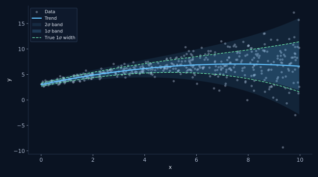
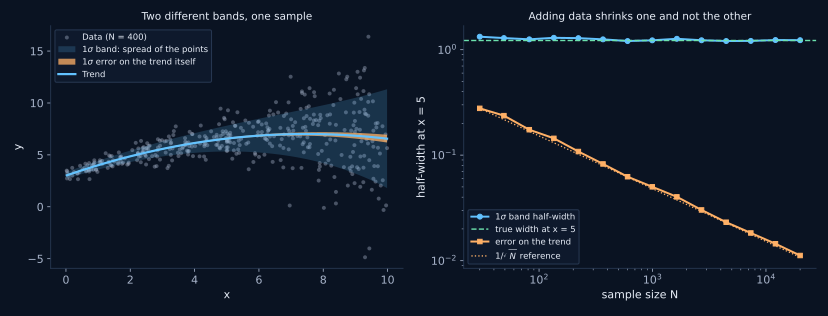
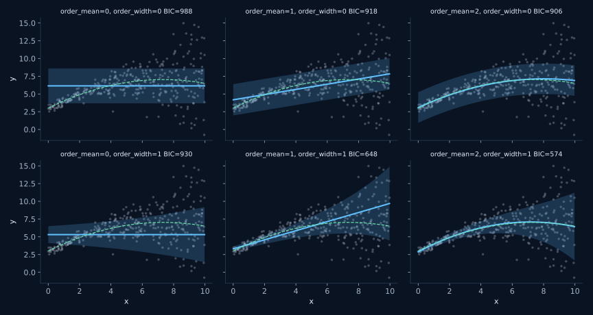
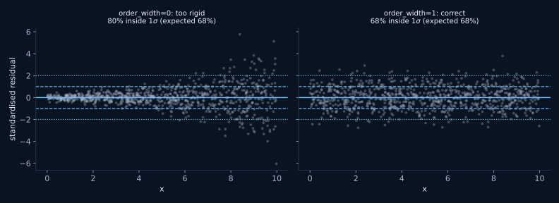
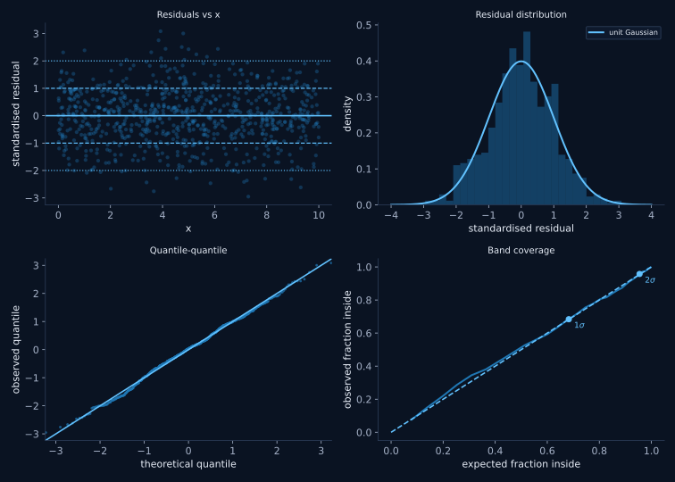
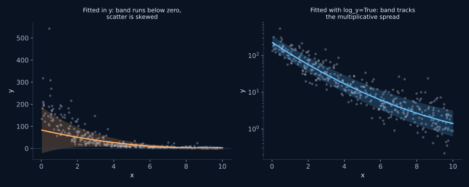
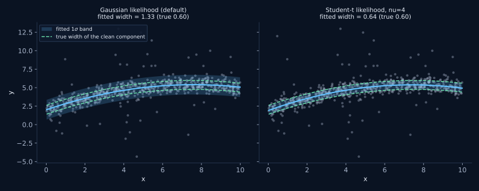
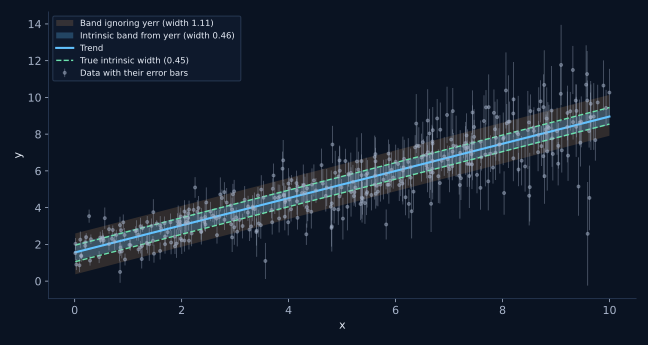
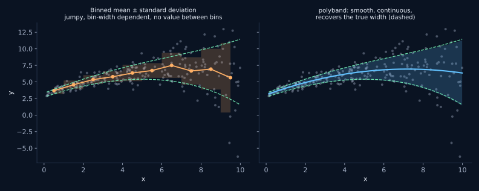

The problemLe problème
You have a cloud of points and you want two things from it: where the middle of the cloud goes, and how thick the cloud is. The second question is usually the interesting one, because it is what lets you say whether a particular object is unusual. The usual approaches each fall short.
- Binning in x gives a jumpy answer that depends on the bin width, says nothing between bin centres, and wastes points near the edges.
- A polynomial fit plus its covariance matrix answers a different question altogether. The covariance describes how well the fitted curve is pinned down, which improves as you collect more data. The thickness of the cloud does not improve; it is a property of the population.
- A polynomial fit plus a single global RMS works only if the scatter is the same everywhere, which is usually the first assumption to fail.
polyband fits a trend and a width at the same time, each as its own
polynomial, by maximum likelihood. This page explains the model, shows what each
option does, and gives runnable examples. Everything shown here is generated from
synthetic data that ships with the package, so every figure can be reproduced with
one command and every fitted band can be compared against the width it was actually
drawn from.
Vous avez un nuage de points et vous voulez en tirer deux choses : où passe le milieu du nuage, et quelle est son épaisseur. La deuxième question est généralement la plus intéressante, puisque c'est elle qui permet de dire si un objet donné est atypique. Les approches habituelles sont toutes insatisfaisantes.
- Le binning en x donne une réponse en dents de scie qui dépend de la largeur des intervalles, ne dit rien entre les centres des bins, et gaspille les points près des bords.
- Un ajustement polynomial et sa matrice de covariance répondent à une tout autre question. La covariance décrit la précision de la courbe ajustée, qui s'améliore à mesure que les données s'accumulent. L'épaisseur du nuage, elle, ne s'améliore pas : c'est une propriété de la population.
- Un ajustement polynomial et un seul écart-type global ne fonctionnent que si la dispersion est identique partout, ce qui est habituellement la première hypothèse à tomber.
polyband ajuste simultanément une tendance et une largeur, chacune sous
forme de polynôme, par maximum de vraisemblance. Cette page explique le modèle,
montre l'effet de chaque option et donne des exemples exécutables. Tout ce qui est
présenté ici provient de données synthétiques livrées avec le module : chaque figure
se reproduit avec une seule commande, et chaque enveloppe ajustée peut être comparée
à la largeur dont elle a réellement été tirée.

InstallInstallation
One command, straight from GitHub. Python 3.9 or newer, with numpy and scipy; matplotlib is only needed for the plotting helpers.
Une seule commande, directement depuis GitHub. Python 3.9 ou plus récent, avec numpy et scipy ; matplotlib n'est requis que pour les fonctions de tracé.
pip install git+https://github.com/eartigau/polyband.gitTo work on the code itself, clone it and install in editable mode with the test dependencies:
Pour travailler sur le code lui-même, clonez le dépôt et installez-le en mode éditable avec les dépendances de test :
git clone https://github.com/eartigau/polyband.git
cd polyband
pip install -e ".[dev]"
pytestQuick startDémarrage rapide
order_mean is the degree of the trend, order_width
the degree of ln(sigma). They are independent, which is the whole point:
a curved trend with a constant-width band is an ordinary combination, and so is a
straight trend whose scatter grows.
order_mean est le degré de la tendance, order_width
celui de ln(sigma). Ils sont indépendants, et c'est là tout l'intérêt :
une tendance courbe avec une enveloppe de largeur constante est une combinaison
parfaitement ordinaire, tout comme une tendance droite dont la dispersion augmente.
import matplotlib.pyplot as plt
from polyband import fit_polyband, plot_polyband
fit = fit_polyband(x, y, order_mean=2, order_width=1)
print(fit.summary())
print(fit.predict(5.0)) # trend at x = 5
print(fit.scatter(5.0)) # half-width of the 1-sigma band at x = 5
print(fit.zscore(5.0, 12.3)) # how unusual a point is, in sigma
art = plot_polyband(fit, x, y, nsigma=(1, 2))
art.ax.legend(handles=art.legend_handles)
plt.show()The key distinctionLa distinction essentielle
The band is not the uncertainty on the trendL'enveloppe n'est pas l'incertitude sur la tendance
These are two different quantities, and mixing them up is the single most common mistake in this kind of plot. The uncertainty on the trend comes from the coefficient covariance matrix and shrinks like 1/√N. The band describes where the points are, and does not shrink at all: with more data it simply converges on the true population width.
Ce sont deux quantités distinctes, et les confondre est l'erreur la plus fréquente dans ce genre de figure. L'incertitude sur la tendance provient de la matrice de covariance des coefficients et décroît en 1/√N. L'enveloppe décrit où se trouvent les points, et ne rétrécit pas du tout : avec davantage de données, elle converge simplement vers la largeur réelle de la population.

| DescribesDécrit | As N growsQuand N augmente | AnswersRépond à | |
|---|---|---|---|
fit.envelope(x) |
where the points lieoù se trouvent les points | converges to the true spreadconverge vers la dispersion vraie | is this object unusual?cet objet est-il atypique ? |
fit.trend_band(x) |
where the curve liesoù se trouve la courbe | shrinks like 1/√Ndécroît en 1/√N | how well do I know the mean relation?quelle est la précision de la relation moyenne ? |
The modelLe modèle
ln s(x) = Pwidth(x)
Both polynomials are fitted at once by maximum likelihood, not in two passes. That matters: the trend is then weighted by the local scatter, so points in the noisy part of the x range pull less on the mean than points in the quiet part.
Three design choices are worth knowing about.
- The width polynomial describes ln(sigma), not sigma or sigma squared. Fitting the squared residuals with an ordinary polynomial lets the variance go negative, which then has to be clipped, and it weights outliers by their fourth power. Working in ln(sigma) makes positivity automatic.
- x is rescaled onto [-1, 1] internally. A Vandermonde matrix built from raw values in the thousands is hopelessly ill-conditioned by degree 3.
- Maximum-likelihood widths are biased low by roughly √((N-p)/N), so the fit corrects for it by default. This is the same correction as dividing by N-1 rather than N in a plain standard deviation.
Les deux polynômes sont ajustés simultanément par maximum de vraisemblance, et non en deux passes. Cela compte : la tendance est alors pondérée par la dispersion locale, de sorte que les points situés dans la portion bruitée de l'axe des x influencent moins la moyenne que ceux de la portion calme.
Trois choix de conception méritent d'être connus.
- Le polynôme de largeur décrit ln(sigma), et non sigma ou sigma au carré. Ajuster les résidus au carré avec un polynôme ordinaire laisse la variance devenir négative, ce qu'il faut ensuite tronquer, et donne aux points aberrants un poids en puissance quatrième. Travailler en ln(sigma) rend la positivité automatique.
- x est ramené sur [-1, 1] en interne. Une matrice de Vandermonde construite à partir de valeurs brutes de l'ordre du millier est irrémédiablement mal conditionnée dès le degré 3.
- Les largeurs par maximum de vraisemblance sont biaisées vers le bas d'environ √((N-p)/N) ; la correction est appliquée par défaut. C'est la même correction que diviser par N-1 plutôt que par N dans un écart-type ordinaire.
Does it work?Est-ce que ça marche ?
Coverage of the 450-point fit shown at the top of this page, against what a correctly specified band should give:
Couverture de l'ajustement à 450 points montré en haut de cette page, comparée à ce que devrait donner une enveloppe correctement spécifiée :
Two lines to check it on your own data:
Deux lignes pour le vérifier sur vos propres données :
for k, obs, exp in fit.coverage(x, y):
print(k, obs, exp)What the two degrees controlCe que contrôlent les deux degrés
The same 350 points, fitted with every combination of a trend degree from 0 to 2 and a width degree of 0 or 1. Along a row the trend gets more flexible; between rows the band does. The dashed green curve is the true trend.
Les mêmes 350 points, ajustés avec toutes les combinaisons d'un degré de tendance de 0 à 2 et d'un degré de largeur de 0 ou 1. Sur une rangée, la tendance gagne en souplesse ; d'une rangée à l'autre, c'est l'enveloppe. La courbe verte pointillée est la tendance vraie.

Choosing the degreesChoisir les degrés
If you have no reason to prefer particular degrees, let BIC scan them. It penalises extra parameters more firmly than AIC, which is what you want here: the failure mode to avoid is a width polynomial flexible enough to chase noise.
Si rien ne justifie un choix particulier de degrés, laissez le BIC les balayer. Il pénalise les paramètres supplémentaires plus fermement que l'AIC, ce qui est souhaitable ici : le mode de défaillance à éviter est un polynôme de largeur assez souple pour épouser le bruit.
from polyband import select_orders
fit, table = select_orders(x, y, max_order_mean=4, max_order_width=2)
print(fit.order_mean, fit.order_width)
for order_mean, order_width, bic in table[:5]:
print(order_mean, order_width, bic)Rule of thumb: treat a BIC difference below about 2 as a tie and keep the simpler model. An over-flexible width is not a harmless extra degree of freedom; it produces a band that wiggles to chase noise and then misstates how unusual any given point is.
Règle empirique : considérez un écart de BIC inférieur à environ 2 comme une égalité et conservez le modèle le plus simple. Une largeur trop souple n'est pas un degré de liberté anodin : elle produit une enveloppe qui ondule pour suivre le bruit, et donne ensuite une mauvaise mesure du caractère atypique de chaque point.
Read the residualsLire les résidus
Standardised residuals, (y - trend) / sigma(x), should look
like a structureless strip of constant width. Their shape tells you which degree is
wrong:
Les résidus standardisés, (y - tendance) / sigma(x), doivent
ressembler à une bande sans structure et de largeur constante. Leur forme indique quel
degré est en cause :
- a funnel means
order_widthis too lowun entonnoir signifie queorder_widthest trop bas - a wave means
order_meanis too lowune ondulation signifie queorder_meanest trop bas - heavy tails mean you want
nudes queues lourdes signifient qu'il faut passer ànu
from polyband import plot_diagnostics
plot_diagnostics(fit, x, y)

plot_diagnostics: standardised
residuals against x, their distribution against a unit Gaussian, a
quantile-quantile plot, and the coverage curve. A well specified band gives a
structureless first panel and a coverage curve on the diagonal.
Les quatre panneaux de plot_diagnostics : les résidus
standardisés en fonction de x, leur distribution comparée à une gaussienne réduite,
un diagramme quantile-quantile, et la courbe de couverture. Une enveloppe
correctement spécifiée donne un premier panneau sans structure et une courbe de
couverture sur la diagonale.
Quantities that span orders of magnitudeQuantités s'étendant sur plusieurs ordres de grandeur
When the scatter is multiplicative rather than additive, y itself is the
wrong variable to fit. Pass log_y=True and polyband works on log10(y)
internally while handing results back in the units of y, so nothing downstream has to
know about the transform.
Quand la dispersion est multiplicative plutôt qu'additive, y n'est pas la
bonne variable à ajuster. Passez log_y=True et polyband travaille en
interne sur log10(y) tout en renvoyant les résultats dans les unités de y, de sorte que
rien en aval n'a besoin de connaître la transformation.

The one place the transform stays visible is the width:
fit.scatter() returns dex, because a band symmetric in log space is
asymmetric in linear space and there is no single number to report otherwise. Use
fit.envelope() for the edges, which does come back in the units of y.
Le seul endroit où la transformation reste visible est la largeur :
fit.scatter() renvoie des dex, car une enveloppe symétrique en espace
logarithmique est asymétrique en espace linéaire et aucun nombre unique ne peut la
décrire autrement. Utilisez fit.envelope() pour les bords, qui sont bien
renvoyés dans les unités de y.
Samples with outliersÉchantillons avec valeurs aberrantes
Under a Gaussian likelihood, a handful of far-flung points drags the band
open across the whole x range. Setting nu switches to a Student-t
likelihood, which stops letting those few points set the width. Values of 3 to 5 are
strongly resistant; larger values approach the Gaussian case.
Sous une vraisemblance gaussienne, une poignée de points très éloignés
élargit l'enveloppe sur tout l'intervalle en x. Définir nu bascule vers une
vraisemblance de Student, qui empêche ces quelques points de dicter la largeur. Des
valeurs de 3 à 5 sont très résistantes ; des valeurs plus grandes tendent vers le cas
gaussien.

Points with measurement errorsPoints avec barres d'erreur
If your points carry uncertainties, the observed spread is the intrinsic
spread and the measurement noise added in quadrature. Usually the intrinsic part is the
one you want to describe. Pass yerr and the fit separates them inside the
likelihood.
Si vos points portent des incertitudes, la dispersion observée est la somme
quadratique de la dispersion intrinsèque et du bruit de mesure. C'est généralement la
part intrinsèque que vous cherchez à décrire. Passez yerr et l'ajustement
les sépare au sein de la vraisemblance.

Compared to binningComparaison avec le binning

Matplotlib integrationIntégration matplotlib
plot_polyband draws on the axis you give it, never touches
figure-level state, never calls show() or legend() by itself,
and returns every artist it created. That makes it safe to call twice on the same axis,
which is how you overlay two fits.
plot_polyband dessine sur l'axe que vous lui donnez, ne touche
jamais à l'état global de la figure, n'appelle jamais show() ni
legend() de lui-même, et renvoie tous les objets graphiques qu'il a créés.
On peut donc l'appeler deux fois sur le même axe, ce qui est la façon de superposer deux
ajustements.
art = plot_polyband(
fit, x, y, ax=ax,
nsigma=(1, 2, 3), # nested bands
color="#c77dff",
point_kw=dict(s=14, marker="^"), # forwarded to ax.scatter
trend_kw=dict(linewidth=3.0), # forwarded to ax.plot
band_kw=dict(hatch="//"), # forwarded to ax.fill_between
show_trend_error=True,
)
art.trend.set_zorder(10) # restyle afterwards
ax.legend(handles=art.legend_handles)
# Overlay a second fit on the same axis
plot_polyband(robust_fit, ax=ax, show_points=False,
color="tab:green", label_prefix="Student-t: ")Curves stop exactly where the data stop. A polynomial band has no
business being drawn where nothing constrains it, so extrapolate defaults
to 0 and any extension is something you have to ask for deliberately.
Les courbes s'arrêtent exactement là où s'arrêtent les données. Une
enveloppe polynomiale n'a rien à faire là où rien ne la contraint : extrapolate
vaut 0 par défaut, et toute extension doit être demandée délibérément.
Runnable examplesExemples exécutables
Five scripts in examples/, each self-contained and running on
synthetic data shipped with the package:
Cinq scripts dans examples/, chacun autonome et fonctionnant sur
des données synthétiques livrées avec le module :
01_quickstart.py
fit, check coverage, plotajuster, vérifier la couverture, tracer02_choosing_orders.py
BIC selection and residual diagnosticssélection par BIC et diagnostics des résidus03_robust_and_errors.py
outliers and measurement errorsvaleurs aberrantes et barres d'erreur04_log_space.py
quantities spanning decadesquantités s'étendant sur des décades05_matplotlib_integration.py
styling, overlays, extrapolationstyle, superpositions, extrapolation
The figures on this page come from
docs/make_figures.py, which regenerates all of them in one run.
Les figures de cette page proviennent de
docs/make_figures.py, qui les régénère toutes en une seule exécution.
ReferenceRéférence
Fitting optionsOptions d'ajustement
| ArgumentArgument | What it doesRôle |
|---|---|
order_mean | Degree of the trend polynomial. 0 is a constant, 1 a straight line.Degré du polynôme de tendance. 0 pour une constante, 1 pour une droite. |
order_width | Degree of the ln(sigma) polynomial, independent of the trend. 0 gives a band of constant width.Degré du polynôme en ln(sigma), indépendant de la tendance. 0 donne une enveloppe de largeur constante. |
log_y=True | Fit log10(y). For quantities spanning decades or with multiplicative scatter.Ajuster log10(y). Pour les quantités s'étendant sur des décades ou à dispersion multiplicative. |
yerr=... | Per-point measurement errors, so the fitted width is the intrinsic scatter.Erreurs de mesure point par point, pour que la largeur ajustée soit la dispersion intrinsèque. |
nu=4 | Student-t likelihood, for samples with outliers.Vraisemblance de Student, pour les échantillons avec valeurs aberrantes. |
dof_correction | Undo the downward bias of maximum-likelihood widths. On by default.Corriger le biais vers le bas des largeurs par maximum de vraisemblance. Actif par défaut. |
n_bootstrap | Estimate the coefficient covariance by resampling instead of from the Hessian.Estimer la covariance des coefficients par rééchantillonnage plutôt que par le hessien. |
On the fit objectSur l'objet ajusté
| MethodMéthode | ReturnsRenvoie |
|---|---|
predict(x) | The trend, in the units of y.La tendance, dans les unités de y. |
scatter(x) | Half-width of the 1σ band, in dex when log_y is set.Demi-largeur de l'enveloppe à 1σ, en dex si log_y est actif. |
envelope(x, nsigma) | Lower and upper edges of the band, where the points lie.Bords inférieur et supérieur de l'enveloppe, là où se trouvent les points. |
trend_band(x) | Confidence band on the curve itself, a different and narrower thing.Bande de confiance sur la courbe elle-même, quantité différente et plus étroite. |
zscore(x, y) | How unusual a point is, in units of the local width.À quel point un point est atypique, en unités de la largeur locale. |
coverage(x, y) | Observed against expected fraction inside the band.Fraction observée dans l'enveloppe, comparée à l'attendu. |
grid(n, extrapolate) | An x grid spanning the fitted range, for plotting.Une grille en x couvrant l'intervalle ajusté, pour le tracé. |
summary() | Human-readable description of the fit.Description lisible de l'ajustement. |
aic, bic | Information criteria, for comparing degrees.Critères d'information, pour comparer les degrés. |